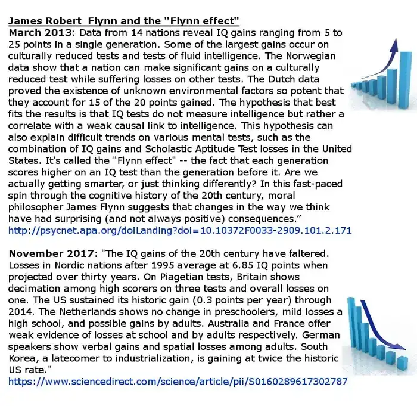

The finding
In the 1980s James Flynn noticed something hiding in plain sight. Every time a standardised test was restandardised, the new sample scored higher than the old one on the old norms — by about three IQ points a decade. Across the twentieth century that compounds to roughly fifteen to twenty points, or about a standard deviation.
Maps, diagrams and images



The name 'Flynn effect' was coined by others; Flynn himself preferred to describe it as a puzzle about what intelligence tests actually measure. The finding is not in dispute. Its causes are.
What kind of gain it is
The gains are not uniform across subtests, and that is the clue. They are largest on tests of abstract reasoning — matrices, similarities, classification — and near zero on tests of vocabulary, arithmetic and general knowledge. If people had simply become smarter in a general sense, the gains would be spread evenly.
Flynn's own reading was that the twentieth century changed how people think rather than how much: from a world of concrete particulars to one of abstractions, categories and hypotheticals, which is exactly what the tests reward. Schooling, nutrition, health, smaller families, urbanisation and a visually richer environment are all candidate contributors, and none has been isolated as the main one.
The reversal
Since the 1990s, several countries — Norway, Denmark, the UK, France, the Netherlands — have reported the trend flattening or reversing on some tests. The size of the reversal is small, the data are patchy, and the explanations are contested: changes in immigration, in test coaching, in schooling, or a ceiling effect from a measure that was never designed to track a century of change.
Documented: large gains in measured IQ across birth cohorts in the twentieth century, concentrated on abstract reasoning.
Documented: a flattening or reversal in several rich countries since the 1990s on some tests.
Not established: the cause. Every candidate is plausible, none is decisive, and they are not mutually exclusive.
Not supported: the reading that the twentieth century made people genetically more intelligent. A change that fast, and that specific to particular subtests, is environmental by default.
Why it matters: any claim that intelligence is falling, or rising, has to say which test, which country and which decade — and most do not.
Why it is in the archive
Because it is the fact that makes every argument about IQ harder. If the measure moves by a standard deviation in a century, then the measure is not measuring a fixed thing, and any claim built on it — about race, about schooling, about a generation — has to explain the movement before it uses the number.
Open resources on this topic
- BookThe Rise And Fall Of The Flynn Effect As A Reason To Expect A Narrowing Of The Black White IQ Gap — Rushton, J. Philippe & Arthur R. Jensen. (Internet Archive, free to read)
- BookWhat is intelligence? : beyond the Flynn effect — Flynn, James R. (James Robert), 1934- · 2009 (Internet Archive, free to read)
- BookHuman intelligence and medical illness : assessing the Flynn effect — Steen, R. Grant · 2009 (Internet Archive, free to read)
- PapersOpen-access articles: DOAJ · PubMed Central · Internet Archive Scholar
- BooksPublic-domain and borrowable copies: Open Library · Project Gutenberg · Google Books
Cite this page
Momin, S. (2026). The Flynn Effect. The Larger World Archive. https://drsamonline.github.io/LARGE_GLOBE/flynn-effect.htmlMomin, Sohil. “The Flynn Effect.” The Larger World Archive, 2026, https://drsamonline.github.io/LARGE_GLOBE/flynn-effect.html.Momin, Sohil. “The Flynn Effect.” The Larger World Archive, 2026. https://drsamonline.github.io/LARGE_GLOBE/flynn-effect.html.@misc{the2026flynn,
author = {Momin, Sohil},
title = {The Flynn Effect},
year = {2026},
howpublished = {The Larger World Archive},
url = {https://drsamonline.github.io/LARGE_GLOBE/flynn-effect.html},
note = {Last reviewed 20 November 2026}
}Last reviewed 20 November 2026 · Corrections policy · this page is not peer reviewed
Sources for this page
- Wikipedia, “Flynn effect” — the finding, the subtest pattern and the reversalen.wikipedia.org
- Wikipedia, “Intelligence quotient” — what the tests measure and how they are normeden.wikipedia.org
- Wikipedia, “Heritability of IQ” — the framework the effect complicatesen.wikipedia.org
- Wikipedia, “g factor (psychometrics)” — the structure underneath the scoreen.wikipedia.org